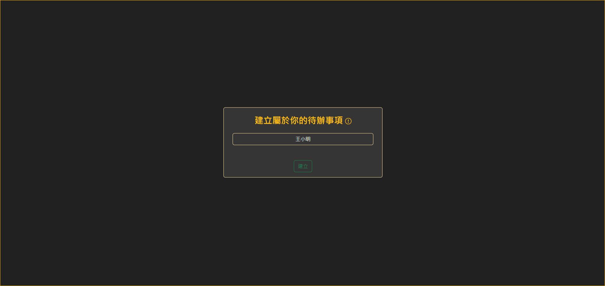
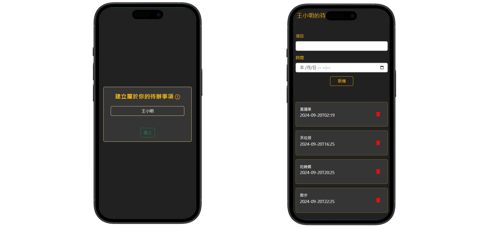

作品概述
此網站"代辦事項"僅用來練習Cookie及localStorage的應用。開發工具
- 前端：HTML、CSS、Javascript、JQuery、Bootstrap
- 作業系統：Windows
負責項目
網站架構規劃、網站頁面切版主要功能
建立個人待辦事項、刪除代辦事項、資料保存相關連結
作品概述
此網站"代辦事項"僅用來練習Cookie及localStorage的應用。開發工具
負責項目
網站架構規劃、網站頁面切版主要功能
建立個人待辦事項、刪除代辦事項、資料保存相關連結